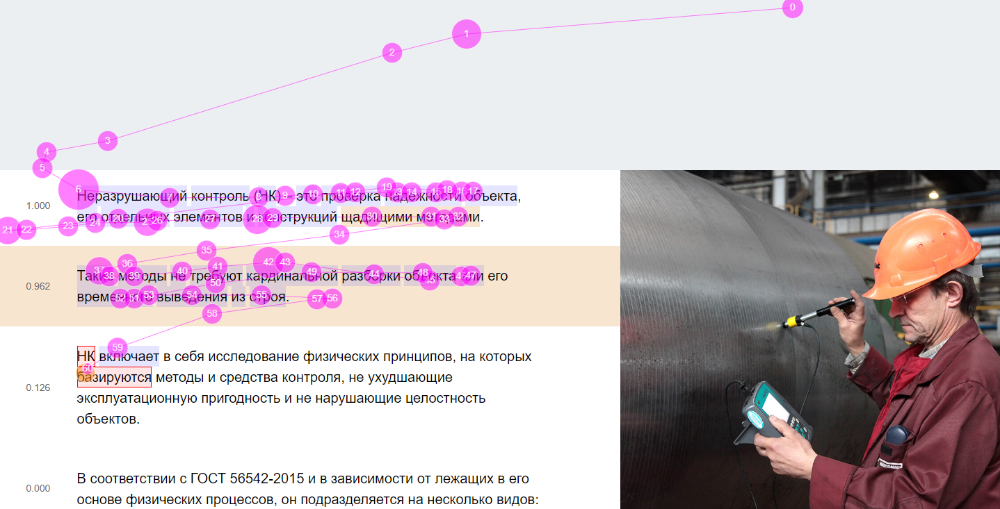
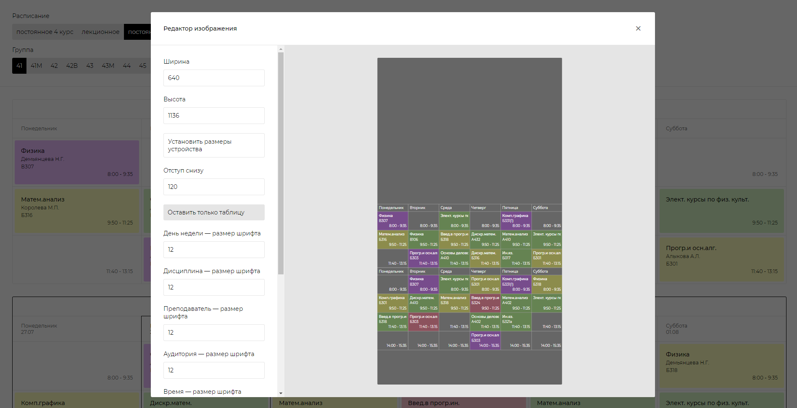

Бакалавр и в настоящее время магистрант кафедры Информационных технологий ИГЭУ
Также получил доп. образование по направлению "Переводчик в сфере профессиональной коммуникации" на кафедре Интенсивного изучения английского языка ИГЭУ
Анализ и оптимизация бизнес-процессов. Мое основное образовательное направление. Изучал системный анализ, теоретические основы информационных систем и их проектирование, математические методы принятия решений, информационную и инновационную экономику, архитектуру предприятий и так далее, список большой.
Анализ данных. Хотя, мне не нравится повсеместное употребление понятия "анализа". Анализ — это разложение общего на частные взаимосвязанные элементы. Данные не надо раскладывать на что-то еще более мелкое, их нужно синтезировать и генерировать новую ценную информацию.
Машинное обучение. В данном направлении я больше самоучка. Понимаю, для чего нужны различные модели распознавания образов, классификации, прогнозирования и на чем они основаны.
Веб-разработка. Неплохо чувствую себя как во фронт-, так и в бэк-энд разработке. Само собой знаю HTML и CSS, а также PHP, Python, но предпочитаю JavaScript (React, NodeJS). Однако готов адаптироваться под разные задачи, стараюсь постоянно развиваться и актуализировать имеющиеся знания. Имел дело с SQL и NoSQL базами.
Можно много написать про то, какой я коммуникабельный, что умею работать в команде и контролировать гнев, но уверен, что это ненужно. Объективно оценить темперамент и характер человека возможно только при личном общении, поэтому ко мне можно обратиться по вот этим ссылкам:
Моя текущая научно-исследовательская работа в университете.
Комплекс состоит из системы представления и управления контентом, системы поддержки формирования контента, системы окулографического мониторинга восприятия информации.
Цель данной НИР — вложить в задачу Интернет-маркетинга больше осмысленности, логики; максимально параметризировать элементы целевой аудитории для того, чтобы представить каждому человеку индивидуальную информацию, способную объяснить смысл инновации и ее предназначение в конкретно его предметной области.
Для реализации НИР активно используется машинное обучение в задачах распознавания глаз человека, прогнозирования направления его взгляда на мониторе, адаптации контента под индивидуальные особенности пользователей.
Приходится залезать в различные научные области: в маркетинг, когнитологию, гештальтпсихологию, лингвистику, интеллектуальный анализ данных — и изучать много нового.
Локализация правого глаза и радужки для дальнейшей параметризации, накопления выборки и обучения модели прогнозирования направления взгляда
Отображение пути взгляда пользователя для ручного мониторинга восприятия
Прототип разрабатывался командой Сигматика, в которой я был капитаном, в рамках направления "Цифровой атом" отборочного этапа чемпионата CASE-IN 2020.
В процессе разработки были обработаны заданные массивы исходных данных с Kaggle, построена модель перцептрона для решения задачи предиктивного обслуживания оборудования.
Клиент — React, сервер — NodeJS и Python (для обеспечения работы библиотеки BrainJS), СУБД — MongoDB.
Отображение состояния оборудования
Диплом прилагается. Чемпионат проходил не в родном университете, поэтому не первое место, но в финал все равно прошли
Мне не нравится то, как представлено наше расписание на сайте ИГЭУ, поэтому я захотел сделать свое. Изначально заполнял свое расписание ручками, но потом стал все больше и больше автоматизировать этот процесс, написал парсер на PHP (потом переписал на NodeJS) и выложил в Интернет, чтобы все могли пользоваться.
А еще там можно сформировать настоящую картинку с расписанием, доступна кастомизация.
Скриншот веб-приложения
Редактор изображения с расписанием (я использовал для установки на экран блокировки телефона)
По просьбе знакомых участвовал во фронт-разработке клиента, который использует API Яндекс.Маршрутизации.
Это был мой первый опыт работы с картами: загрузка тайлов с OpenStreetMap, отображение пунктов, соединение их путями, приближения и отдаление по кликам...
Скриншот веб-приложения